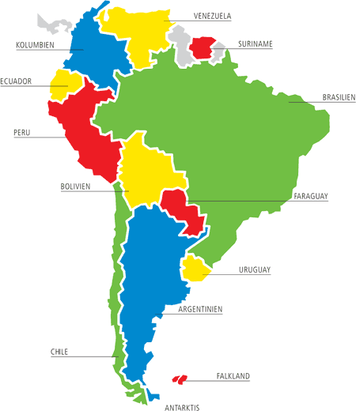

Unentdecktes Land: Südamerika
Wo die Regenwälder rauschen
Südamerikas Rückgrat bilden die Anden, ein Gebirgszug, der sich an der Westküste über 7.500 km entlangzieht, von Kolumbien bis zur Südspitze. Im Zentrum liegen die Tiefländer, vom mächtigen Amazonas und seinen unzähligen Zuflüssen eingenommen. Im Osten befinden sich Bergländer. Die Südspitze des Kontinentes ist Kap Hoorn, auf einer Insel gelegen. Hier treffen sich der Atlantik und der Pazifik.
Südamerika ist bekannt für:
- tropische Traumstrände
- bunte Feste
- grüne Regenwälder
- uralte Traditionen
Zwei der bekanntesten Länder in Südamerika sind Brasilien und Chile. Hier ein kleiner Überblick über die Größenverhältnisse:
| Land | Fläche (km2) | Einwohner | Hauptstadt |
|---|---|---|---|
| Brasilien | 8.547.400 | 182.190.000 | Brasília |
| Chile | 756.950 | 16.000.000 | Santiago |

Weitere Informationen finden sich in Wikipedia.